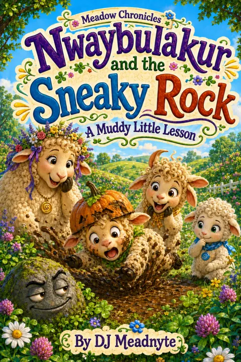

I
Queen Mama Hullabaloo Shimmy-Shamba the Magnificent
A Chronicle gathering its doorway.

House Project · H03
A place where mischief wanders freely, wonder grows wild, and even the smallest mistake may be carrying an old lesson home.

Featured Chronicle
A Muddy Little Lesson
In the Meadow, a rock is never only a rock—and a muddy mistake may be carrying a lesson of its own.
Nwaybulakur and the Sneaky Rock brings the warmth, wonder, and playful wisdom of The Meadow Chronicles into one richly illustrated encounter.
Listening edition
Listening sample in preparation
A Muddy
Little Lesson.Elsewhere in the Meadow
Each story opens another corner of the Meadow—and another small piece of wisdom hidden inside its mischief.